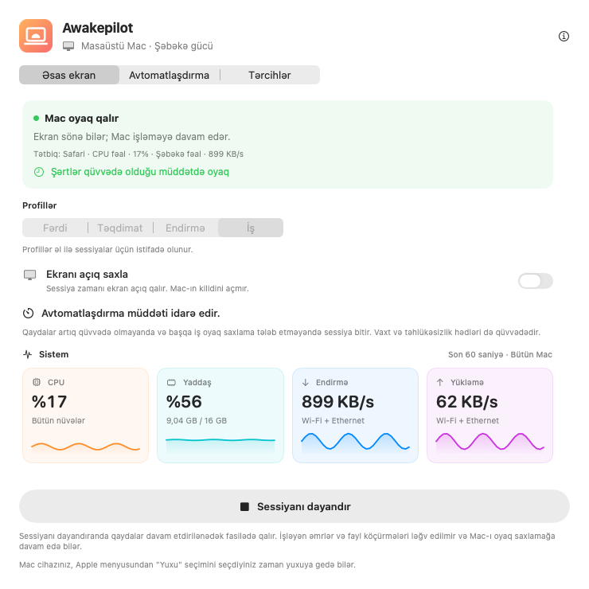
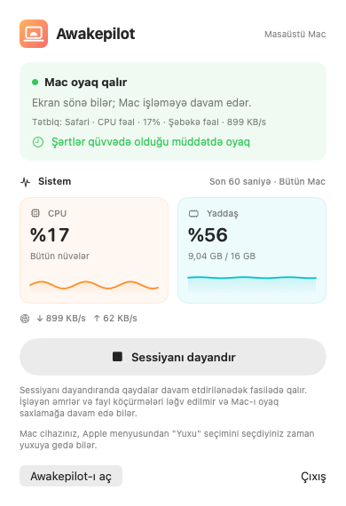
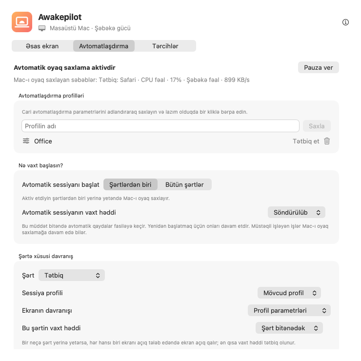

Çevik oyaq saxlama sessiyaları
Mac-ı limitsiz, müəyyən müddətə və ya dəqiq tarix və saata qədər oyaq saxlayın.
15 dəq1 saat2 saat∞
Kompilyasiya, video ixracı və böyük fayl köçürmələri zamanı avtomatik yuxunun qarşısını alın. Müddət və ya şərtlər seçin. Bunlar bitəndə Awakepilot Mac-ı oyaq saxlamağı dayandırır; başqa aktiv işin buna ehtiyacı varsa, qoruma davam edir.


Müddət və ya sessiyanı başladacaq şərtləri seçin. Qoruma bitəndə Mac öz yuxu parametrlərinə əməl edir; dərhal yuxuya keçmir.
Mac-ı limitsiz, müəyyən müddətə və ya dəqiq tarix və saata qədər oyaq saxlayın.
CPU, yaddaş, yükləmə və göndərmə fəaliyyətini canlı qrafiklərdə izləyin.
Əvvəlcə nəyi izləyəcəyinizi seçin. Tətbiq açıq, proses işlək və ya seçilən disk qoşulu olduqda Mac oyaq qalsın.
Adapter, batareya hədləri, UPS vəziyyəti və ekran seçimlərinə əməl edir.
Seçdiyiniz yazıla bilən xarici disklərdə kiçik bir faylı vaxtaşırı yeniləyərək onları aktiv saxlamağa kömək edir.
Qorumanın nə vaxt başladığını, niyə davam etdiyini və nə vaxt bitdiyini görün.

Mac-ı oyaq saxlayan tətbiq, proses və şərtləri görün. Qaydalar artıq uyğun gəlmirsə və başqa işin qorunmaya ehtiyacı yoxdursa, adi yuxu parametrləri tətbiq olunur.
Tətbiqin açıq olması işin hələ davam etdiyini sübut etmir. CPU və şəbəkə fəaliyyətinin azalması da işin bitdiyini təsdiqləmir.
Nəyin izlənəcəyini, ekran davranışını və vaxt həddini seçin. Aktiv şərtləri və son dəyişiklikləri tətbiqdə yoxlayın.
Studiya şəbəkəsində və ya iş VPN-ində başlayın. Zənglər üçün ekran açıq qalsın; təhlükəsizlik həddində dayansın.
İxrac prosesini adına görə izləyin və ekranın sönməsinə icazə verin. Proses bitəndə qoruma dayanır; başqa iş və ya qayda tələb edirsə, davam edir.
Arxiv diski qoşulanda başlayın, köçürməni qoruyun və Drive Alive-ı yalnız seçilən yazıla bilən diskdə işlədin.
Bir şərt ödənəndə başlayın və ya hamısını tələb edin. Məsələn, yalnız ofis Wi-Fi şəbəkəsində və xarici disk qoşulu olduqda.
Awakepilot seçilən yazıla bilən xarici disklərdə kiçik işarə faylını yeniləyir. Başqa tətbiqin faylını əvəz etmir; söndürüləndə öz faylını silir, disk yenidən qoşulsa belə.
Nə baş verdiyini bilin. Awakepilot hər CPU və şəbəkə ölçməsini yazmaq əvəzinə vacib keçidləri qeyd edir.
Şəbəkə fəaliyyətini və ya ehtiyat diskini izləyin. Fəaliyyət həddən aşağı qalanda və ya disk ayrıldıqda qayda bitir.
Terminal prosesini adına görə izləyin və ya əmrin bütün icra müddətində Mac-ı oyaq saxlayın.
Ekran açıq profilini yalnız təqdimat şərti aktiv olduqda tətbiq edin.
Enerji və müddət hədlərini qoruyaraq Mac-ı əlçatan saxlayın.
Hesab və reklam yoxdur. Ayarlar və fəaliyyət Mac-də qalır. İstəyə bağlı sayğac standart olaraq bağlıdır; rəy yalnız formanı göndərdikdə ötürülür. Yeniləmələr Awakepilot saytından gəlir.
Məxfilik məlumatlarını oxuyun →macOS üçün imzalanmış və Apple tərəfindən təsdiqlənmiş universal versiyanı yükləyin.
Applications qovluğuna sürükləyin. Hesab və abunə tələb olunmur.